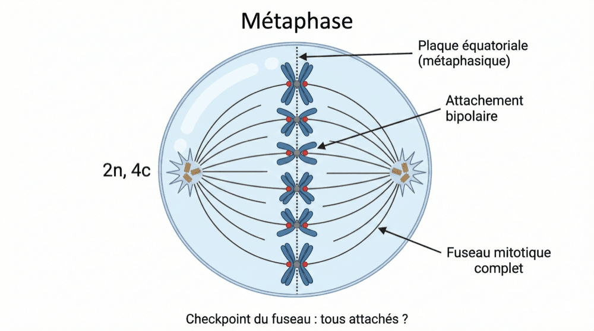

Les 3 points de contrôle du cycle
Tu connais les phases, le moteur et le frein.
Reste à savoir où la cellule s'arrête pour vérifier.
La fiche précédente t'a montré le frein d'urgence de la cellule : quand l'ADN est endommagé, le cycle est bloqué via p53/p21. Mais un frein ne sert à rien si personne ne regarde la route. C'est le rôle des points de contrôle (le cours les appelle aussi checkpoints — c'est le même mot) : le cycle cellulaire en possède plusieurs, qui vérifient que tout se passe bien avant de continuer. Le cours les résume par une image simple, et cette image contient déjà l'essentiel.
Si OK → Feu vert ✅ → Progression vers la phase suivante.
Si problème → Feu rouge ⛔ → Arrêt du cycle (via p53/p21, vu dans la fiche précédente).
Le principe général est toujours le même. À chaque étape critique du cycle, la cellule fait une pause et vérifie deux choses : est-ce que les conditions sont réunies pour continuer ? et est-ce que tout s'est bien passé dans la phase précédente ? Une question tournée vers l'avant, une question tournée vers l'arrière. Il y a trois de ces feux à connaître, et tu es déjà passé devant les trois sans le savoir : la fin de G1, la fin de G2, la métaphase.
- 1 🟢 Le point de restriction (point R) — fin de G1. Il se place à la fin de la phase G1, juste avant l'entrée en phase S. La cellule y vérifie trois choses : sa taille cellulaire (suis-je assez grande pour me diviser ?), les signaux extérieurs (y a-t-il des facteurs de croissance, des nutriments ?), et l'intégrité de son ADN (mon ADN est-il intact avant de le répliquer ?). Si tout est OK → engagement IRRÉVERSIBLE dans le cycle, entrée en phase S. Si un problème est détecté → arrêt en G1 ou sortie vers G0. Le point clé : une fois ce point passé, la cellule est obligée de terminer le cycle jusqu'à la division.
- 2 🟠 Le point de contrôle G2/M — fin de G2. Il se place à la fin de G2, avant l'entrée en mitose. La cellule y vérifie que la réplication est terminée (tout l'ADN a-t-il été copié ?), l'intégrité de l'ADN (pas de cassures, pas d'erreurs ?), une taille cellulaire suffisante, et que les centrosomes sont dupliqués (nécessaires pour former les 2 pôles du fuseau). Si tout est OK → activation du MPF (Cdk1/cycline B) → entrée en mitose. Si l'ADN est endommagé → p53/p21 bloque le MPF → pas d'entrée en mitose. Le point clé : ce point de contrôle empêche une cellule avec un ADN mal répliqué ou endommagé d'entrer en mitose.
- 3 🔴 Le point de contrôle du fuseau — en métaphase. Il se place en métaphase, avant l'anaphase. La cellule y vérifie une seule chose, mais sur tous les chromosomes : sont-ils correctement attachés aux microtubules des DEUX pôles (l'attachement bipolaire) ? Si au moins 1 chromosome est mal attaché → blocage en métaphase. Si tous sont bien attachés → anaphase.
C'est de ce troisième feu que la fiche sur la métaphase te devait le fin mot : on t'y a dit que rien ne démarre tant que tous les chromosomes ne sont pas attachés, sans expliquer comment la cellule tient ce blocage. Voilà la mécanique — avec des acteurs que tu connais déjà, ceux de l'anaphase.
- 1 Les kinétochores non attachés (le kinétochore, c'est la structure protéique posée au niveau du centromère : c'est par là que les microtubules tiennent le chromosome) envoient un signal « STOP » 🚨.
- 2 Ce signal bloque l'APC/C (le complexe qui déclenche l'anaphase).
- 3 APC/C inactif → pas de séparase (elle est bien là, mais toujours retenue par la sécurine : sans APC/C actif, rien ne la libère) → cohésines intactes → pas de séparation des chromatides.
- 4 Dès que tous les chromosomes sont bien attachés → le signal « STOP » est levé → APC/C actif → séparation → anaphase.
Tant qu'un seul kinétochore n'est pas accroché, les cohésines tiennent bon et la cellule reste figée en métaphase, ses chromosomes alignés au milieu. C'est là tout le point clé : ce point de contrôle garantit que chaque cellule fille recevra exactement 46 chromosomes — une distribution équitable.

| Point de contrôle | Position | Que vérifie-t-on ? | Si OK → |
|---|---|---|---|
| Point R | Fin G1 | Taille + Signaux + ADN intact | Entrée en S (irréversible) |
| G2/M | Fin G2 | Réplication complète + ADN intact | Entrée en mitose (MPF actif) |
| Fuseau | Métaphase | Tous chromosomes attachés (bipolaire) | Anaphase (séparation) |
C'est le tableau du cours, celui qu'il donne comme « les 3 points de contrôle à retenir pour le QCM ». Entraîne-toi à le recopier de mémoire, ligne par ligne.